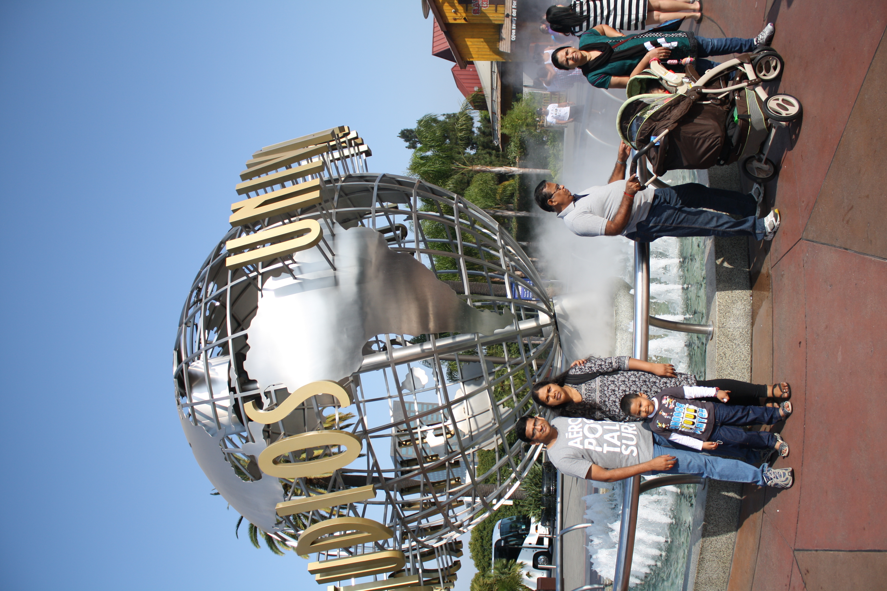
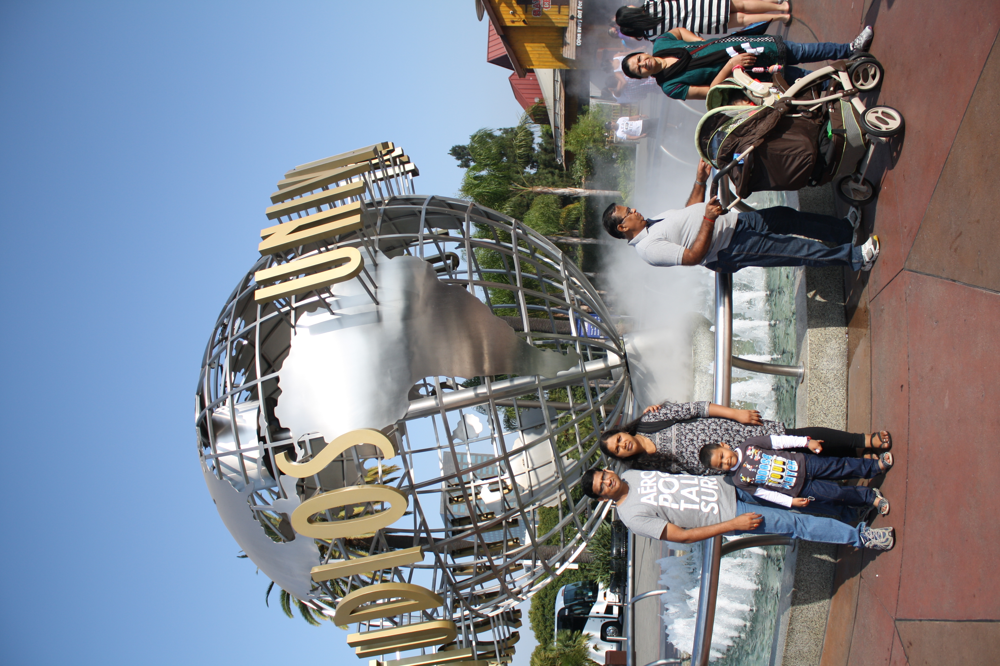
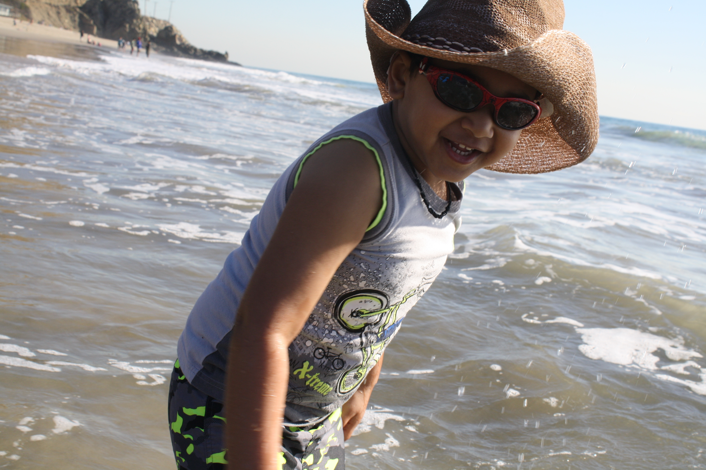
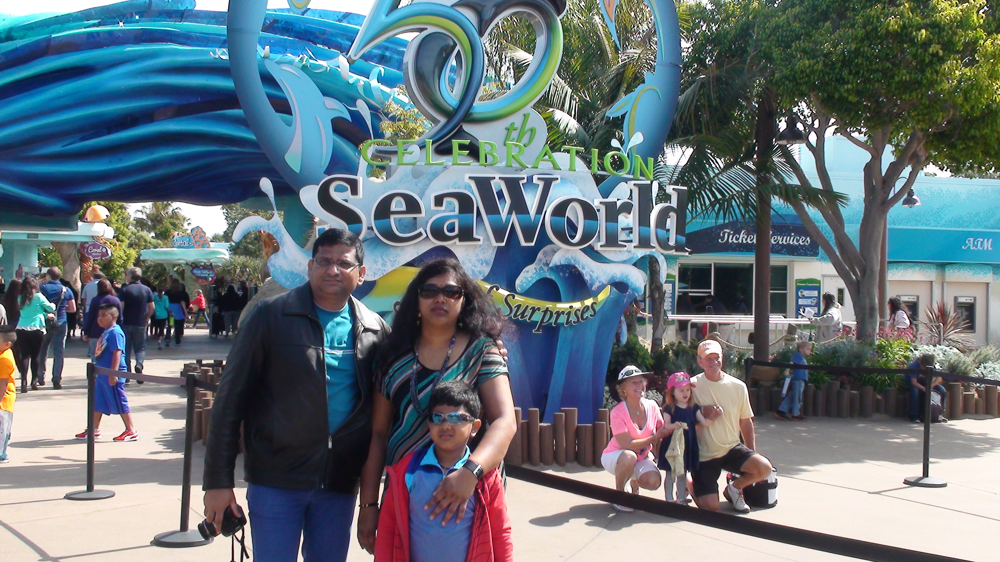
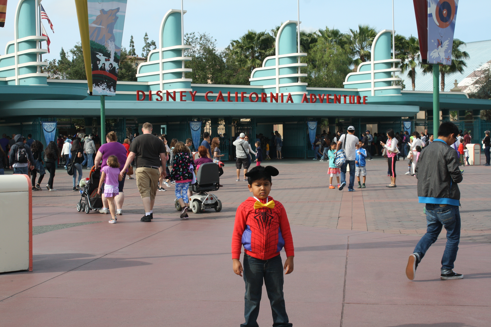
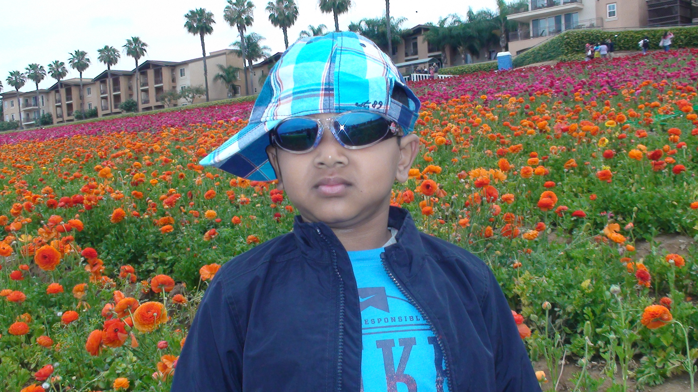

UNIVERSAL STUDIO
Universal Studios Hollywood is a film studio and theme park in the San Fernando Valley area of Los Angeles County, California. About 70% of the studio lies within the unincorporated county island known as Universal City while the rest lies within the city limits of Los Angeles, California. It is one of the oldest and most famous Hollywood film studios still in use. Its official marketing headline is "The Entertainment Capital of LA".[1] It was initially created to offer tours of the real Universal Studios sets and is the first of many full-fledged Universal Studios Theme Parks located across the world.
 

For additional images ClicK Here
BEACHES & AVALON ISLAND
Science tells us that beach time is good for the mind and body, from the meditative effects of staring at the waves to the soothing sensation of warm sand on our feet. After months of stay-at-home restrictions, we could all use a dose of surf-and-sand medicine, and with California beaches now open, it's time to slather on the SPF.
SEA WORLD
SeaWorld San Diego is an animal theme park, oceanarium, outside aquarium and marine mammal park, in San Diego, California, United States, inside Mission Bay Park.

DISNEYLAND
Disneyland Park, originally Disneyland, is the first of two theme parks built at the Disneyland Resort in Anaheim, California, opened on July 17, 1955. It is the only theme park designed and built to completion under the direct supervision of Walt Disney. It was originally the only attraction on the property; its official name was changed to Disneyland Park to distinguish it from the expanding complex in the 1990s. It was the first Disney theme park.

LEGO LAND
Legoland California Resort is a theme park, miniature park, and aquarium[4] located in Carlsbad, California, based on the Lego toy brand. Opening on March 20, 1999, it was the third Legoland park to open,[1] and the first outside Europe. The park is currently owned by Merlin Entertainments, which took a controlling interest in 2005.[5] A second park in the United States, Legoland Florida, opened in 2011.

CARLSBAD FLOWER FIELDS
The Flower Fields at Carlsbad Ranch are located near the Carlsbad Shopping Outlet Mall and Legoland amusement park and is comprised of 50 acres of colorful flowers that grace the hillsides overlooking the Pacific Ocean each spring (typically March through May). For a nominal fee visitors can enjoy wandering through the fields and getting a close-up view of the growth. Included on the premises are a special nursery, garden, and gift shop by Armstrong Garden Centers, and festivals throughout the season. Among the specialty flower attractions, there are often miniature roses and poinsettias. A 1,500 square foot greenhouse is filled with the world famous Ecke poinsettias. Learn about the Ecke family, the world’s largest producer of the country’s best selling potted plant, The Poinsettia. There is also an orchid greenhouse, a sluice mining facility for kids, a play area called Santa’s Playground, and a sweet peak maze. Brilliantly colored ranunculus flower fields are the chief attraction here, and they are indeed special. They most often come in multiple layers of delicate, crepe paper-thin petals, looking like an origami masterwork. Ranunculus flowers excel in southern and western gardens, and make terrific container plants everywhere. They also make long-lasting cut flowers. Bulbs are available at the garden center.
